大愛無國界
難民孩子不能進國立學校，誰來教他們讀書？

先別急著下結論，讀完再說說你的想法～
這一篇講慈濟和聯合國難民署（UNHCR）的合作：從一間擠滿六十多個孩子的宗教學校開始，到義診、難民學校、現金補助和疫情援助。
最後是三個難民孩子的故事，他們都從受幫助的人，變成幫助別人的人。
下面是原書的節錄，紅色底線是我們替你標出的轉折點。
讀之前：你覺得幫助難民，最難的是什麼？
不承認的身分
難民在馬來西亞過著怎樣的日子？慈濟怎樣跟聯合國難民署合作？閱讀引導
政府對於難民採取四不政策：一、不承認難民身分，一律視為「非法入境者」，二、不提供庇護，三、不給予民生福利及保障，四、基於人道考量，不強行遣返原居地。
因此，絕大部分滯留馬來西亞的難民只能到處躲藏，若被執法人員抓到，只能押送扣留營、監獄或流放邊境。

只能到處躲……
- 逾十八萬人已登記的難民與庇護申請者p.177
- 十萬多名羅興亞族p.177
- 兩萬三千多名欽族p.177
2004年，慈濟接到聯合國難民署轉介的醫療個案，需協助一位心臟病難民緊急取得醫生的證明書飛往收容國。
牽起了合作的緣！
當地有一位緬甸籍宗教師哈欣，因為不希望下一代失學、不懂宗教禮儀，在該地成立士拉央宗教學校，教授難民學生讀《古蘭經》、緬甸語、數學及英文，他靠著賣檳榔及家長樂捐善款，勉強維持學校運作。
慈濟志工前往學校關懷時，六十多個孩子，上課、吃飯、睡覺都擠在悶熱狹小的空間，學習狀況及環境衛生都不理想。

都擠在一個小地方……
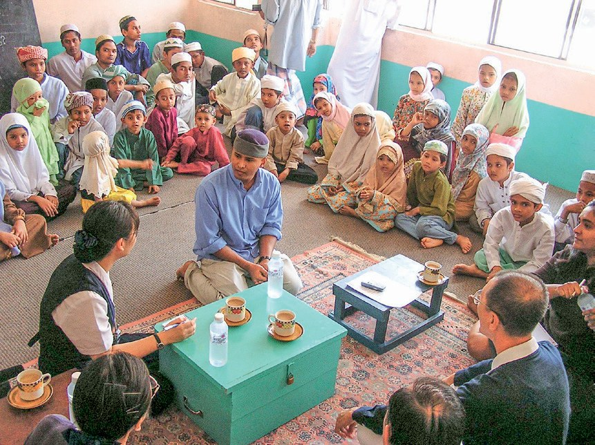
「首次難民義診，讓慈濟發現馬來西亞國內有很多難民極需援助，因此從那次開始，我們便認真考慮將難民義診納入人醫會的服務項目，也與UNHCR探討長期合作的可能性。」
慈濟志工陳志偉指出・p.179雙方於2005年3月1日首度簽署「難民援助計劃行動夥伴諒解備忘錄」。
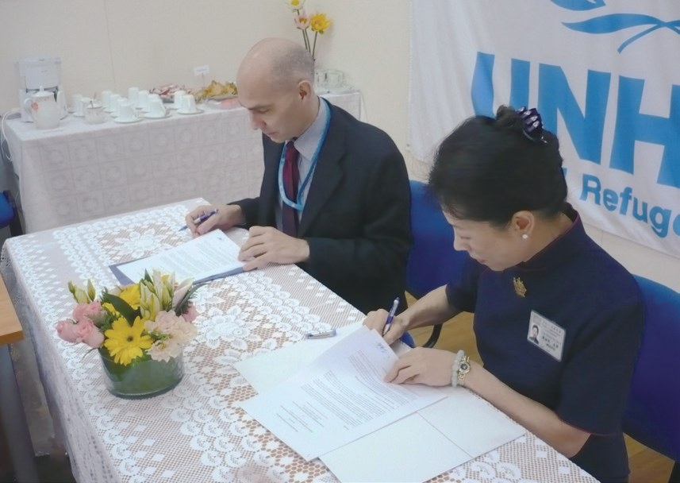
「要成為UNHCR的執行夥伴，不僅要符合資格，是否落實計劃及成效都是審核標準，因此能被選為執行夥伴，是一項嘉許，也是對慈濟的肯定。」
聯合國難民署暨慈濟專案協調員謝添榮表示・p.181
升為「執行夥伴」！
身體沒病，是心病
扣留營、社區義診、義診中心，一步一步守護難民的健康。閱讀引導
難民的「非法」身分，讓他們長期面臨環境危險和工作被剝削，又「因病而貧、因貧而病」陷入極端貧困的循環，隨之而來的是社會和身心問題。
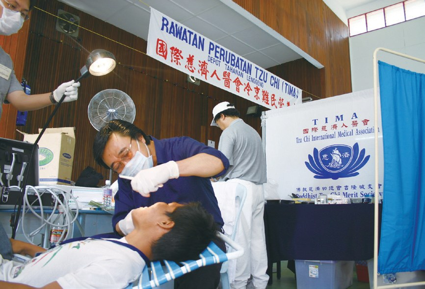
義診時，志工發現難民普遍患有皮膚病，因此志工接續改善扣留營的供水問題，協助修復廢棄的古井，讓難民們有足夠的水源，能洗澡、清洗衣物，降低環境衛生的隱憂。
就去修古井！
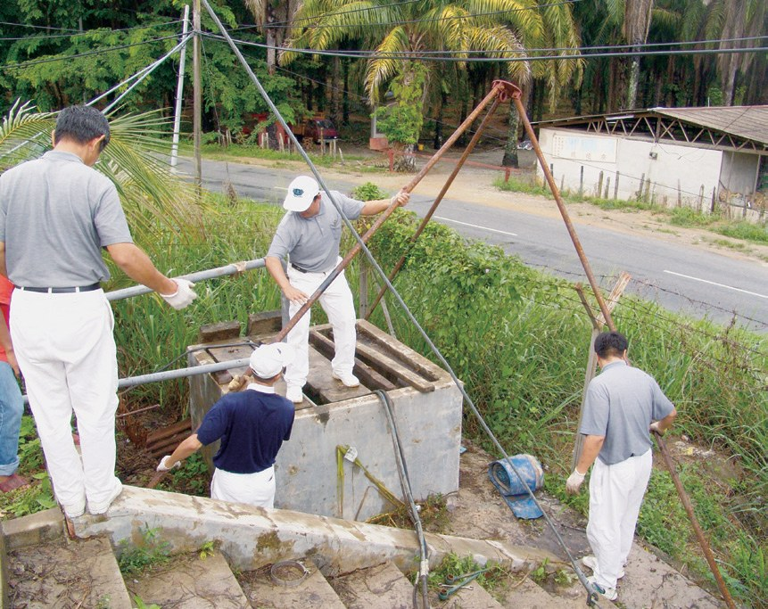
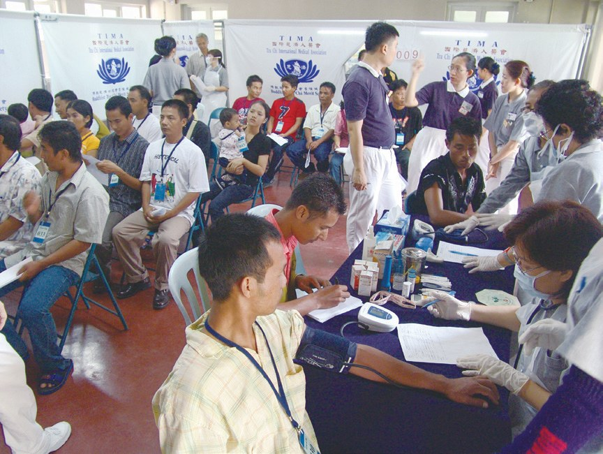
多數醫生回饋，其實很多難民身體沒有病，而是恐懼被取締、經濟壓力、身分不被認同的沮喪等因素，逐漸形成「心」病。
病在心裡……
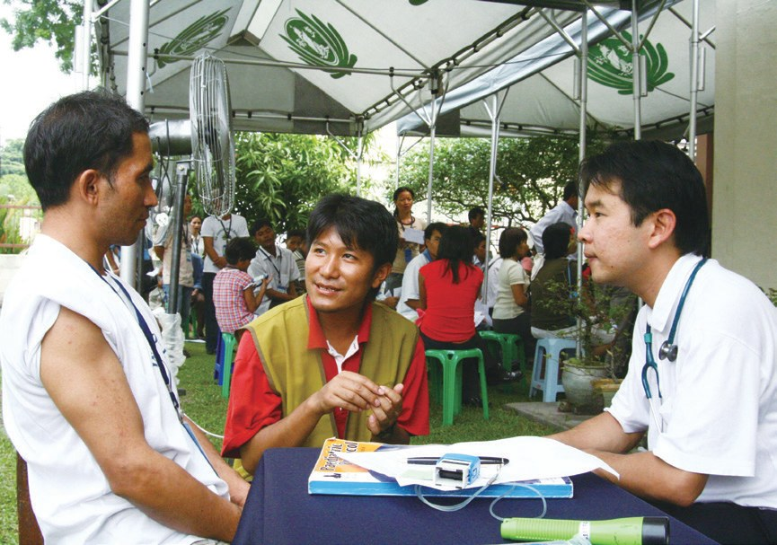
提出開放服務難民，此舉曾面臨考驗，因政府規定慈善機構的捐款只能用在本國人身上，難民不屬此列。……後來經臺灣慈濟本會提出以國際賑災基金支付此費用，才解決義診中心的撥款問題。
猜一猜閱讀引導
截至2022年，慈濟與UNHCR的義診醫療援助計劃，一共嘉惠了多少人？
不能進國立學校
難民孩子不能上國立學校，慈濟和UNHCR一起辦學。閱讀引導
馬來西亞不允許難民兒童就讀國立學校，至於私立學校，收費則是令難民家庭望而卻步。
難民教育中心開辦以來，經常面對難民家庭家長工作遷徙、執法單位取締，甚至童婚問題等原因搬離住所，孩子教育因而中斷；或是學生曠課幫父母照顧弟妹，女生則常被阻止到校上課……
女生還常被阻止上學……
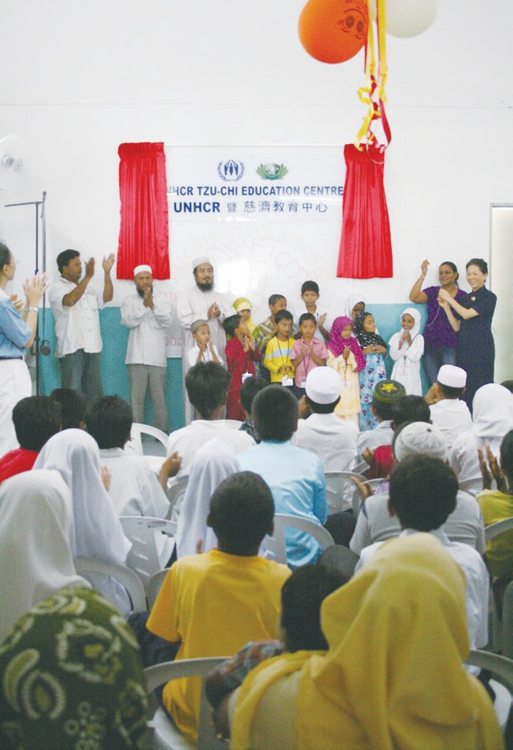
2008年8月開始，慈濟志工、教聯會老師及大愛媽媽們每月定期至教育中心落實慈濟人文教育，增加靜思語教學、品德教育。志工更為完成小學六年學業的孩子舉辦畢業典禮。
有了基本知識，也降低孩子們就業被欺壓，甚至受騙的機率。
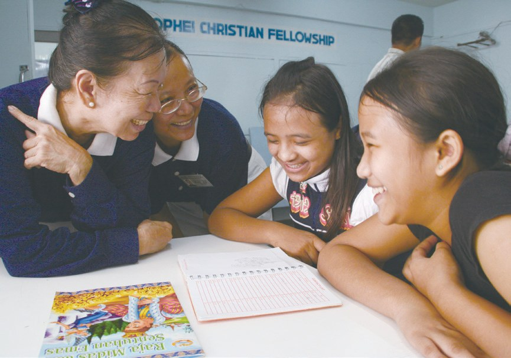
經多年努力奔波申請政府認證，和氣、合心兩校於2019年和2020年取得政府准證，註冊名稱為「慈濟和氣學習中心」和「慈濟合心學習中心」。

拿到了政府准證！
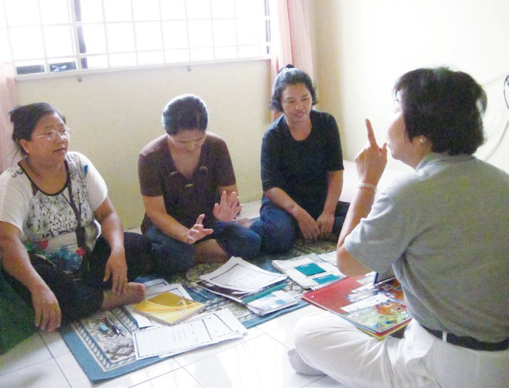
每班學員15至20人，年齡從4歲至50歲都有，以羅興亞族居多，也有斯里蘭卡難民參與。

坐在同一班學英文！
月薪五百，手術四萬
生重病、斷糧、疫情來了，難民怎麼辦？閱讀引導
如出生才七個月大的穆巴力，心臟有破損、急須手術，父親從事清潔工，月薪僅500令吉，根本無力支付40,000令吉的醫療費。
手術要四萬……
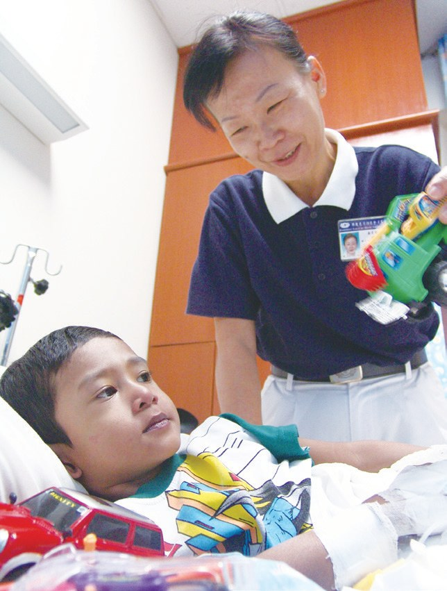
幸得鷹格醫療中心減免、善心人士捐助，不足的10,000令吉由UNHCR、慈濟承擔各半……
現金補助計劃主要幫助短期失去收入來源，或生活遇到重大危機的難民。例如：殘疾需要照護者、流離失所的難民孤兒、失去依靠的獨居老人，以及各弱勢群體等。
去家訪評估。
「學生在電話中告訴我們家裡已經斷糧了，甚至還有斷糧好幾天的家庭。於是，我們馬上啟動緊急發放。」
雪隆分會難民專案主任符之良醫師表示・p.194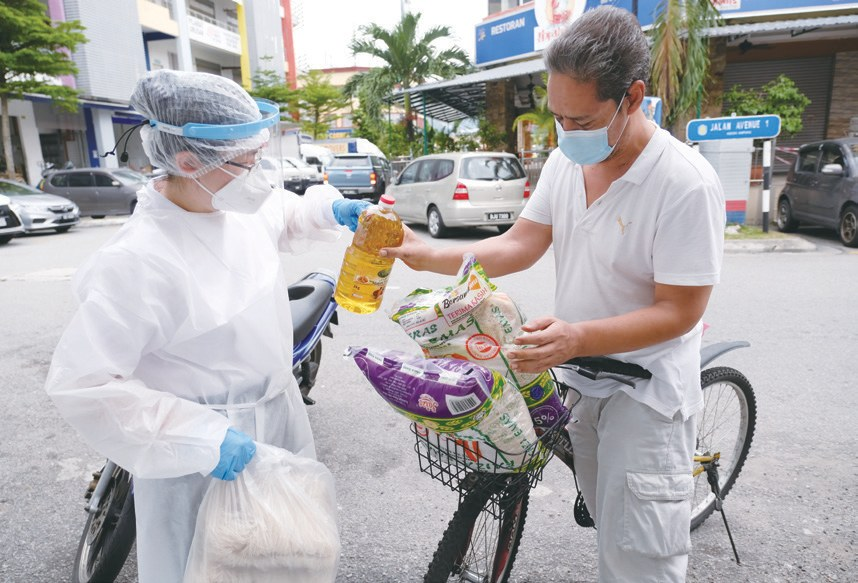
除了溝通問題，難民往往也不相信，在疫情期間會有人來關心他們、幫助他們。
會有人來幫忙……
- 約四萬九千人次志工動員p.195–196
- 37,249人次難民受惠p.196
從受助到助人
一位誦經冠軍、一位拾荒少年、一位十五歲才讀一年級的學生。閱讀引導
2007年，安華的媽媽病逝，宗教師哈欣成為安華的監護人，將安華當作自己的孩子，訓練安華誦讀《古蘭經》。歷經一年磨練，安華在馬來西亞雪蘭莪州的古蘭經誦讀比賽中，以難民身分奪得冠軍。
「你擁有一個非常好的孩子。」
2014年最後一次面試結束，面試官對宗教師哈欣說・p.1972015年，十七歲的安華正式通過烏茲達（意指宗教師）認證，成為可以教授學童誦讀《古蘭經》的宗教師。
自己當老師了！
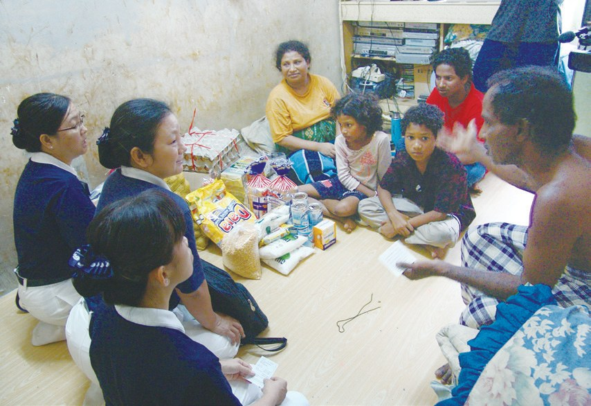
「如果我沒有讀書，就會像以前那樣，每天出去撿破銅爛鐵來賺錢。我不能辜負善心人士的捐款……」
哈尼夫表示・p.1982016年，哈尼夫順利畢業，受聘為吉隆坡慈濟義診中心助理，協助醫師看診，為緬甸同胞翻譯，成為醫師與病患溝通的橋梁。
變成醫生的翻譯！
緬甸羅興亞族難民賈博爾，在十三歲時逃難來馬來西亞，2016年十五歲的他以超齡生身分就讀和氣難民學校小學一年級。
每一天，天未亮他就出門上學，下午三點放學；由於他是獎學金受惠學生，還必須承擔一個小時的義工工作；結束後他則步行至菜市場兼職……
半夜才吃晚餐！
「他一開始不懂老師在講什麼，因為程度實在不夠，但是他肯堅持，不懂就問，所以他學得最多。」
慈濟志工陳雲姬說・p.199賈博爾順利在2020年畢業，並錄取吉隆坡慈濟義診中心成為助理，協助為醫師與患者翻譯緬甸及羅興亞語的工作。
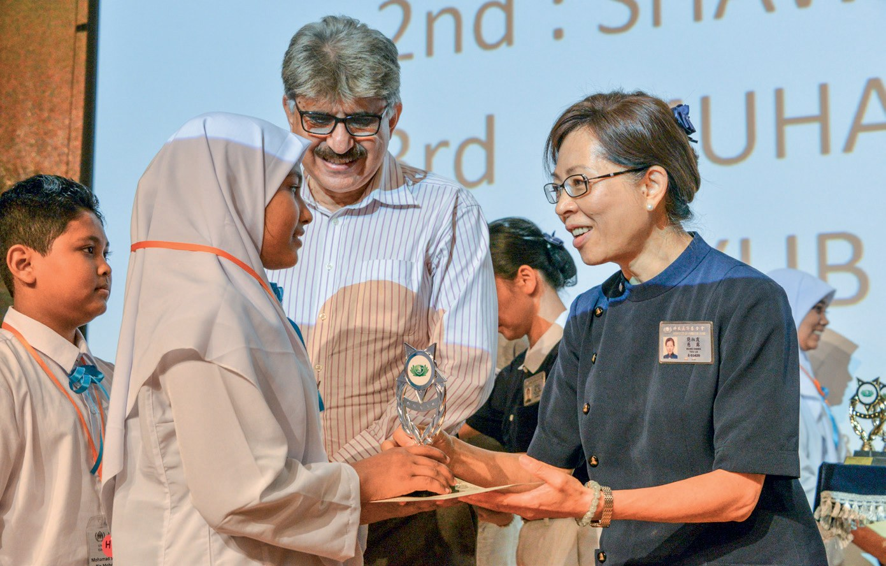
看到慈濟的團體之美，是真誠地長期投入在難民的生活中，用愛去膚慰著。
上人感恩雪隆慈濟人的付出・p.199停一停：誰讓你記住了？閱讀引導
選一位你印象最深的人。沒有標準答案。
有人賣檳榔辦學校，有人拾荒長大，有人十五歲才讀一年級。哪一位讓你最有感覺？

一起回頭看看吧～
回望
依本章原文整理，每一條都標了原書頁碼。閱讀引導
背後原因
為什麼難民需要慈濟

小川已經有聯合國難民署，為什麼還需要慈濟？
- 四不政策
不承認難民身分，一律視為「非法入境者」。p.177
- 人力撥款有限
醫療、教育計劃等，仍須仰賴非政府組織協助。p.178
- 執行夥伴
慈濟成為執行夥伴，服務從醫療延伸至教育。p.181
後續發展
攜手UNHCR一路走來

小禾從一個醫療個案開始，合作了多少年？
- 2004
士拉央宗教學校首次難民義診。p.179
- 2005
簽署備忘錄；冷京扣留營義診、修古井。p.180、p.182
- 2007
成為執行夥伴，推動難民兒童學前教育。p.181
- 2010
義診中心開放難民；啟動特殊醫療專案。p.185、p.191
- 2016
合作現金補助計劃。p.193
- 2020
疫情中為難民學校家庭緊急發放。p.194
三個孩子
以前和後來
小川他們變了什麼？
- 安華：經常在外遊蕩成為教誦《古蘭經》的宗教師p.196–197
- 哈尼夫：撿破銅爛鐵貼補家計義診中心的翻譯助理p.197–198
- 賈博爾：在緬甸沒機會上學義診中心的翻譯助理p.198–199
以上只整理本章寫到的事；書裡沒寫到的，我們不替它下結論。
回頭看讀前的選擇閱讀引導
政府不承認難民身分（p.177）；義診要靠緬籍翻譯員（p.184）；疫情時，難民不相信會有人來幫他們（p.195）。讀完之後，你覺得哪一個最難？
這是巧合嗎？
只有你自己看得到喔！
準備好了就一起出發～